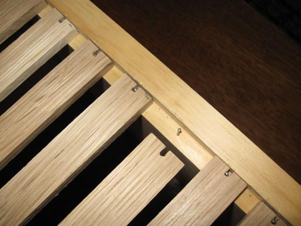
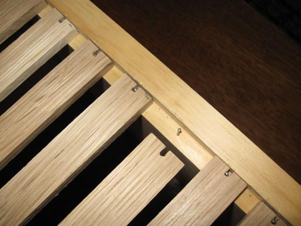

Honey Color Guide | Toolbox | Swarm Catcher | Local Pollinator Photos | Videos | Warré Hive Entrance Modifications | Contact
Warré Top-Bar Construction
"This method is a lot simpler but it requires top-bars that are more difficult to make. The top-bar has a tongue like tongue-and-groove flooring. The tongue should be only 3–4 mm tall and right in the centre of the top-bar."
― Abbé Èmile Warré, Beekeeping For All (1948), Translation by David and Patricia Heaf
Quartersawn white oak is ripped into 24 mm x 9 mm strips for the top-bars. White oak is used to ensure the top-bars remain rigid. Any top-bar flexure will cause comb failure.
White oak top-bars are cut to a length of 318 mm. A centered saw kerf cut is made lengthwise in the bottom of the top-bar. Cedar starter stips are cut to insert in the saw kerf cut.
Cedar starter strips are secured into the top-bar with FDA approved glue.
The starter strips are cut to extend 3-4 mm below the bottom edge of the top-bar. The bottom of the top-bar is rough so the wax will adhere better. As shown in the final photo wax starter is not necessary.
The top-bars are spaced with 12 mm gaps and secured with wire brads within the hive box rabbets. The notched ends allow the top-bars to be easily removed.


 



This site is licensed under a Creative Commons
Attribution-NonCommercial-ShareAlike 3.0 Unported License.
Updated 29 April 2013 | eccentric beekeeper